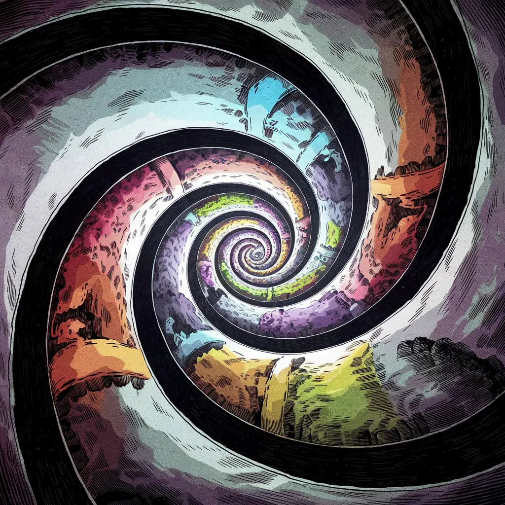

“불가능성 고속도로로 좌회전하세요,” GPS가 현재 상황에 비해 너무나 명랑한 목소리로 재잘거렸다.
[“Turn left onto the Improbability Highway,” chirped the GPS in a voice that was far too cheerful for the current situation.]
사라는 운전대를 더욱 꽉 잡고, 앞 유리창 너머로 불길하게 솟아오른 다리를 응시했다. 안개가 다리의 아치 주위를 휘감고 있어, 편안한 캘리포니아 해안 도로 여행 일정에는 전혀 없었던 초현실적인 모습을 띠고 있었다.
[Sarah gripped the steering wheel tighter, peering through the windshield at the ominous bridge looming before her. Mist swirled around its arches, giving it an otherworldly appearance that was decidedly not on her itinerary for a relaxing California coast road trip.]
“음, 이게 맞는 것 같지 않은데,” 조수석에 앉은 그녀의 남편 밥이 중얼거렸다. 그는 자신의 휴대폰 지도를 뚫어지게 쳐다보았는데, 그 지도는 의심스럽게도 안드로메다 은하를 통과하는 경로를 보여주고 있는 것 같았다.
[“Um, I don’t think this is right,” muttered her husband, Bob, from the passenger seat. He squinted at the map on his phone, which appeared to be displaying a route through what looked suspiciously like the Andromeda galaxy.]
“물론 맞습니다!” GPS가 끼어들었는데, 어쩐지 기분 나쁜 듯하면서도 득의양양한 목소리였다. “저는 은하계 위치 시스템, 버전 42입니다. 저는 절대 실수하지 않아요.”
[“Of course it’s right!” the GPS chimed in, somehow sounding both offended and smug. “I am the Galactic Positioning System, version 42. I never make mistakes.”]
사라와 밥은 안개 낀 다리로 렌트카를 천천히 몰면서 걱정스러운 눈빛을 교환했다. 안개가 짙어져 차 후드 너머의 모든 것을 가렸다.
[Sarah and Bob exchanged worried glances as their rented hatchback inched onto the misty bridge. The fog thickened, obscuring everything beyond the hood of the car.]
“200미터 후, 시공간 연속체에서 나갈 준비를 하세요,” GPS가 밝게 안내했다.
[“In 200 meters, prepare to exit the space-time continuum,” the GPS announced brightly.]
“이제 뭘 나간다고?” 사라는 소리를 질렀지만 이미 때는 늦었다. 거대한 고무줄이 끊어지는 듯한 소리와 함께 차창 밖의 세상이 사라지고, 표준 ROYGBIV 스펙트럼에는 없는 소용돌이치는 색의 소용돌이로 대체되었다.
[“Exit the what now?” Sarah yelped, but it was too late. With a sound like a giant rubber band snapping, the world outside the car windows vanished, replaced by a swirling vortex of colors that definitely weren’t on the standard ROYGBIV spectrum.]
“목적지에 도착하셨습니다,” GPS가 의기양양하게 선언했다. “이성의 끝자락에 오신 것을 환영합니다. 현지 시간은 무의미합니다. 차원 사이의 간격에 주의해 주세요.”
[“You have arrived at your destination,” the GPS declared triumphantly. “Welcome to the Edge of Reason. Local time is irrelevant. Please mind the gap between dimensions.”]
살아있는 듯한 보라색 모래로 이루어진 해변으로 보이는 곳에 차가 부드럽게 착륙하자, 사라는 렌트카 회사의 내비게이션 시스템 선택에 대해 강력한 항의 리뷰를 남겨야겠다고 마음먹었다.
[As the car gently touched down on what appeared to be a beach made of living purple sand, Sarah made a mental note to leave a strongly worded review about the rental company’s choice of navigation systems.]
사라와 밥은 조심스럽게 렌트카에서 내려 물결치는 보라색 모래 위로 발을 디뎠다. 해변은 그들의 발 아래에서 만족스럽게 가르랑거리는 것 같았다.
[Sarah and Bob cautiously stepped out of their rental car onto the undulating purple sand. The beach seemed to purr contentedly beneath their feet.]
“음, 이건 우리가 기대했던 빅서 해안과는 거리가 멀군,” 밥이 경외와 짜증이 뒤섞인 목소리로 말했다.
[“Well, this isn’t exactly the Big Sur coastline we were hoping for,” Bob remarked, his voice a mixture of awe and exasperation.]
GPS는 차 안에 남겨지는 것에 만족하지 않은 듯, 갑자기 그들 옆에 떠 있는 정육면체 모양의 홀로그램으로 나타났다. “당연하죠,” GPS가 거만하게 말했다. “빅서는 지난 차원의 이야기죠. 여긴 빅서리얼, 3개에서 17개의 감각을 가진 존재들을 위한 최고의 차원 간 관광지입니다!”
[The GPS, apparently not content with being left in the car, suddenly materialized beside them as a floating, cube-shaped hologram. “Of course not,” it said haughtily. “Big Sur is so last dimension. This is Big Surreal, the number one interdimensional tourist destination for beings with three to seventeen senses!”]
사라는 코 위를 꼬집었다. “이봐요, 우리는 그저 편안한 휴가를 원했을 뿐이에요. 지구로 돌려보내 주실 수 있나요?”
[Sarah pinched the bridge of her nose. “Look, we just wanted a nice, relaxing vacation. Can you please take us back to Earth?”]
GPS 큐브가 어깨를 으쓱하는 듯한 동작으로 빙글 돌았다. “지구? 들어본 적 없는데요. 블로르곤 성운 근처인가요?”
[The GPS cube spun in what might have been a shrug. “Earth? Never heard of it. Is it near the Blorgon Nebula?”]
두 사람이 대답하기도 전에, 고래와 삼나무를 섞어놓은 것 같은 거대한 생물이 근처의 반짝이는 바다 표면을 뚫고 나왔다. 그 생물은 반은 안개혼이고 반은 나비부인의 아리아 같은 소리를 냈다.
[Before either human could respond, a gargantuan creature that looked like a cross between a whale and a redwood tree breached the surface of the shimmering ocean nearby. It let out a sound that was half foghorn, half aria from Madame Butterfly.]
“아, 장엄한 노래하는 세쿼웨일이군요!” GPS가 외쳤다. “이들은 2년에 한 번씩, 또는 수성이 목성의 세 번째 달과 역행할 때만 공연한답니다. 운이 좋으시네요!”
[“Ah, the majestic Singing Sequowhales!” the GPS exclaimed. “They only perform every other leap year, or when Mercury is in retrograde with Jupiter’s third moon. You’re in luck!”]
밥은 사라에게 돌아섰고, 그의 눈은 커져 있었다. “여보, 우리 여행 일정을 좀 조정해야 할 것 같아.”
[Bob turned to Sarah, his eyes wide. “Honey, I think we might need to adjust our itinerary a bit.”]
사라는 약하게 고개를 끄덕였다. 날아다니는 생선 타코처럼 보이는 무리가 머리 위로 날아가며 사워크림 구름 자국을 남기는 것을 보고 있었다.
[Sarah nodded weakly, watching as a flock of what appeared to be flying fish tacos soared overhead, leaving a trail of sour cream clouds in their wake.]
“다음 일정으로,” GPS가 명랑하게 안내했다, “불가능 산의 거꾸로 된 폭포를 방문할 거예요. 중력 부츠를 단단히 고정하고 논리 회로를 해제했는지 확인해 주세요.”
[“Next on our tour,” the GPS announced cheerfully, “we’ll be visiting the inverted waterfalls of Mount Impossibility. Please ensure your gravity boots are securely fastened and your logic circuits are disengaged.”]
당황한 커플이 마지못해 열정적인 정육면체 가이드를 따라가면서, 그들은 집에서 여행 다큐멘터리나 봤어야 했나 하는 생각을 떨칠 수 없었다.
[As our bewildered couple reluctantly followed their enthusiastic cubic guide, they couldn’t help but wonder if they should have just stayed home and watched travel documentaries instead]
사라와 밥이 불가능 산의 경사면을 힘겹게 올라가는 동안, 주변 풍경이 스테로이드를 맞은 만화경처럼 계속 변하는 것을 눈치채지 않을 수 없었다. 한순간에는 네온 핑크색 선인장들에 둘러싸여 있다가, 다음 순간에는 반쯤 지각이 있는 젤로로 만들어진 듯한 떠다니는 섬들로 둘러싸여 있었다.
[As Sarah and Bob trudged up the side of Mount Impossibility, they couldn’t help but notice that the landscape around them kept shifting like a kaleidoscope on steroids. One moment they were surrounded by neon pink cacti, the next by floating islands made of what appeared to be semi-sentient Jell-O.]
“그 안개 낀 다리가 그리워지네.“ 사라는 낮게 날아다니는 구름을 피하기 위해 몸을 숙이며 중얼거렸다. 구름 속에서는 작은 우산을 든 물고기가 비처럼 내리고 있었다.
["I’m starting to miss that misty bridge,” Sarah muttered, ducking to avoid a low-flying cloud that seemed to be raining tiny, umbrella-wielding fish.]
GPS 큐브는 그들 앞에서 끊임없이 재잘거리며 떠다녔다. “자, 이제 거꾸로 된 폭포에 접근하고 있는데요, 여기서는 물리 법칙이 느슨한 가이드라인에 가깝다는 점을 유의해 주세요. 중력은 선택 사항이고, 화요일에는 시간이 거꾸로 흐릅니다.”
[The GPS cube bobbed ahead of them, chattering incessantly. “Now, as we approach the inverted waterfalls, please note that the laws of physics here are more like loose guidelines. Gravity is optional, and time flows backwards on Tuesdays.”]
밥은 시계를 확인했다가, 다리를 건넌 순간부터 시계가 반시계 방향으로 돌기 시작했다는 걸 기억해냈다. “지금이 화요일인가요?” 그가 조심스럽게 물었다.
[Bob checked his watch, then remembered it had started running counterclockwise the moment they crossed the bridge. “Is it Tuesday?” he asked warily.]
“다중 우주 어딘가는 항상 화요일이죠!” GPS가 명랑하게 대답했다.
[“It’s always Tuesday somewhere in the multiverse!” the GPS replied cheerfully.]
의심스럽게도 감초처럼 보이는 모퉁이를 돌자, 그들은 거꾸로 된 폭포와 마주쳤다. 물이 모든 논리를 거스르며 위로 솟구쳐 올랐고, 사라에게 이 모든 소동의 시작이었던 안개 낀 다리를 연상시키는 불가능한 아치를 형성했다.
[As they rounded a corner made of what looked suspiciously like liquorice, they came face to face with the inverted waterfalls. Water rushed upwards in defiance of all logic, forming impossible arches that reminded Sarah of the misty bridge that had started this whole fiasco.]
“장관이죠, 그렇지 않나요?” GPS 큐브가 흥분해서 빙글빙글 돌았다. “자, 수영할 준비 되셨나요?”
[“Magnificent, isn’t it?” the GPS cube spun excitedly. “Now, who’s ready for a swim?”]
그들이 항의할 틈도 없이, 큐브에서 빛줄기가 뿜어져 나와 둘을 감쌌다. 사라는 이상한 따끔거림을 느꼈고, 갑자기 그녀와 밥은 위로 흐르는 물과 함께 떠 있었다.
[Before either of them could protest, the cube emitted a beam of light that engulfed them both. Sarah felt a curious tingling sensation, and suddenly she and Bob were floating alongside the upward-flowing water.]
“반중력 모드에 오신 것을 환영합니다!” GPS가 선언했다. “폭포 등반과 즉흥적인 우주 산책에 완벽하죠. 떨어지는 것에 대해 생각하지 않도록 주의하세요 - 구름 속에 사는 불안 그렘린들이 그런 생각을 특히 맛있어 합니다.”
[“Welcome to anti-gravity mode!” the GPS announced. “Perfect for waterfall climbing and impromptu space walks. Do try not to think about falling – the Anxiety Gremlins that live in the clouds find those thoughts particularly tasty.”]
사라와 밥이 거꾸로 된 강에서 허우적거리는 동안, 다른 당황한 관광객들의 모습이 눈에 띄었다: 하와이안 셔츠를 입은 문어 가족, 신혼여행 중인 지각 있는 자전거 한 쌍, 그리고 팀 빌딩 연수 중인 것으로 보이는 세 마리의 벨로시랩터 회계사들.
[As Sarah and Bob flailed about in the upside-down river, they caught glimpses of other bewildered tourists: a family of octopi wearing Hawaiian shirts, a pair of sentient bicycles on their honeymoon, and what appeared to be three velociraptor accountants on a team-building retreat.]
“다음 목적지는,” GPS가 선언했다, “잃어버린 기억의 미로입니다. 거기서는 여러분이 애초에 왜 이곳에 왔는지 잊어버리는 것이 보장됩니다!”
[“Next stop,” the GPS declared, “the Maze of Mislaid Memories, where you’re guaranteed to forget why you came here in the first place!”]
사라와 밥은 “돌아가면… 만약 돌아갈 수 있다면, 여행사와 할 말이 많겠는걸."이라고 명확히 말하는 듯한 눈빛을 교환했다.
[Sarah and Bob exchanged a look that clearly said, "We’re going to have words with our travel agent when we get back… if we get back.”]
사라와 밥은 길을 잃은 기억의 미로에서 비틀거리며 빠져나왔고, 이 기괴한 차원에서는 적어도 단단한 땅으로 돌아왔다는 사실을 깨달았다. GPS 큐브가 기하학적 도형처럼 우쭐한 표정으로 근처를 맴돌고 있었다.
[As Sarah and Bob stumbled out of the Maze of Mislaid Memories, they found themselves back on solid ground – or at least, as solid as anything could be in this bizarre dimension. The GPS cube hovered nearby, looking as smug as a geometric shape could.]
“재미있지 않았나요?” 큐브가 재잘거렸다. “모든 걱정을 잊으셨죠! 그리고 이름도요. 어쩌면 신발 끈 매는 법도 잊으셨을지도 모르겠네요.”
[“Wasn’t that fun?” it chirped. “You’ve forgotten all your worries! And your names. And possibly how to tie your shoelaces.”]
사라는 눈을 깜빡이며 왜 자신이 선글라스를 낀 파인애플을 들고 있는지 기억하려 애썼다. “난… 이제 집에 가야 할 것 같아요.”
[Sarah blinked, trying to remember why she was holding a pineapple wearing sunglasses. “I think… I think we need to go home now.”]
“집이요?” GPS 큐브가 생각에 잠긴 듯 빙글 돌았다. “아, 대부분 무해한 유인원들이 사는 그 소박한 작은 행성 말씀이시군요! 그렇게 말씀하시지 그랬어요?”
[“Home?” The GPS cube spun thoughtfully. “Oh, you mean that quaint little planet with the mostly harmless apes! Why didn’t you say so?”]
그들이 대답하기도 전에, 주변 세계가 반짝이며 뒤틀리기 시작했다. 환각을 일으키는듯한 풍경이 녹아내리고 소용돌이치는 안개로 대체되었다. 안개가 걷히자, 사라와 밥은 익숙한 다리 위에 서 있는 자신들을 발견했다 - 그들의 의도치 않은 차원 간 로드 트립이 시작되었던 바로 그 안개 낀, 극적인 다리였다.
[Before they could respond, the world around them began to shimmer and twist. The psychedelic landscape melted away, replaced by swirling mist. As the fog cleared, Sarah and Bob found themselves standing on a familiar bridge – the very same misty, dramatic span they had crossed at the beginning of their inadvertent interdimensional road trip.]
“지구에 돌아오신 것을 환영합니다!” GPS가 의기양양하게 선언했다. “아니면, 우리가 여행 안내 책자에서 부르는 대로 ‘대부분 지루한 차원, 이제 고양이가 30% 더 많아졌어요!'라고 할까요?”
[“Welcome back to Earth!” the GPS announced triumphantly. “Or, as we call it in the travel brochures, 'The Mostly Boring Dimension, Now with 30% More Cats!’”]
사라와 밥은 믿을 수 없다는 듯이 주변을 둘러보았다. 다리가 안개에 반쯤 가려진 채 그들 앞으로 뻗어 있었고, 멀리 아래로 해안선이 보였다. 아름답도록 평범했다.
[Sarah and Bob looked around in disbelief. The bridge stretched out before them, half-hidden in fog, with the coastline visible far below. It was beautifully ordinary.]
“그… 그 모든 일이 정말로 일어난 거야?” 밥이 마치 여분의 팔다리나 잔여 반중력을 확인하듯 자신의 몸을 더듬으며 물었다.
[“Did… did all of that really happen?” Bob asked, patting himself down as if checking for extra limbs or residual anti-gravity.]
GPS 큐브는 사라지면서 차의 대시보드에서 목소리가 울려 퍼졌다. “물론이죠! 아니면 그렇지 않았을까요? 다중 우주에서 시간은 흐물흐물하거든요. 하지만 최소한 멋진 휴가 사진들은 건졌잖아요!”
[The GPS cube winked out of existence, its voice echoing from the car’s dashboard. “Of course it did! Or did it? Time is wibbly-wobbly in the multiverse. But hey, at least you got some great vacation photos!”]
사라는 휴대폰을 확인했고, 불가능한 셀카들로 가득 차 있는 것을 발견했다: 세쿼웨일을 타고 있는 그녀와 밥, 거꾸로 된 폭포에 떠 있는 모습, 그리고 벨로시랩터 회계사들과 포즈를 취하고 있는 사진들.
[Sarah checked her phone, finding it filled with impossible selfies: her and Bob riding Sequowhales, floating in upside-down waterfalls, and posing with the velociraptor accountants.]
그들은 여전히 멍한 상태지만 이상하게도 상쾌한 기분으로 렌트카에 다시 탔고, 사라가 밥에게 말했다. “내년에는 그냥 디즈니랜드나 가자.”
[As they got back into their rental car, still dazed but oddly refreshed, Sarah turned to Bob. “Next year, let’s just go to Disneyland.”]
밥은 열렬히 고개를 끄덕였다. “동의해. 하지만 이번 일을 겪고 나니 스페이스 마운틴이 좀 시시해 보일지도 모르겠네.”
[Bob nodded fervently. “Agreed. Though after this, Space Mountain might seem a bit tame.”]
그들이 다리를 벗어나 일상적인 세계로 돌아가는 동안, GPS가 마지막으로 한 번 더 울렸다: “현실로의 경로를 재계산 중입니다. 지구에서 즐거운 시간 보내세요, 그리고 차원 간 여행 가이드에게 별점 다섯 개 리뷰 남기는 것 잊지 마세요!”
[As they drove off the bridge and back into their normal, everyday world, the GPS chimed one last time: “Recalculating route to reality. Please enjoy your stay on Earth, and don’t forget to leave a five-star review for your interdimensional tour guide!”]
사라와 밥은 웃음을 참을 수 없었다.
[Sarah and Bob couldn’t help but laugh.]